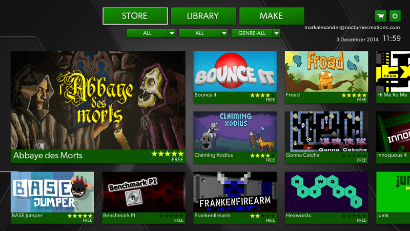
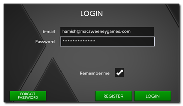
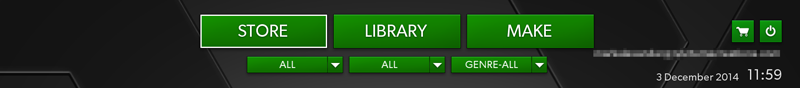
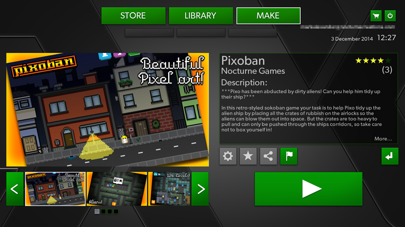

The GameMaker: Player is a stand alone application made with GameMaker: Studio to permit you to play your favourite GameMaker games on any platform, or even publish your own games for others to play. The current version of the app is for the Windows platform, but more versions will be getting added in the future.
NOTE: You can download the GameMaker: Player from the YoYo Games site here: www.yoyogames.com/player if you chose not to install it when you installed GameMaker: Studio.
Once you have downloaded and installed the GameMaker: Player you will be prompted to login before you can start to enjoy the games provided.
You can use the GameMaker: Player to download and play any of the listed games, but first you have be a registered user and log in. When you first install the player you will be prompted to register for an account (see below for further information) and then, once registered, you will be prompted to log in from the following window:
Once you have logged in you will then have access to all the
games available on the GameMaker: Player. You can later log out and
change users at any time from the button at the top of the Player
window.
If you are not yet registered for the GameMaker: Player, you
will need to have clicked the "Register" button in the login
screen, and then have provided an email to link you to your Player
account. When you have done this, you will then be sent an email to
the given address which will contain a link to activate your
account and supply a password.
Once you have your account activated, you can go back to the
Gamemaker: Player and follow the Login instructions given
above.
IMPORTANT: If you are a GameMaker: Marketplace user or developer or you have a YoYo Account, then you can use your login details for the Marketplace to create a Player account without registering.
Once you have registered, you can then visit the YoYo Games site and fill in your account details. This step is not essential to use the player as a gamer, but if you wish to publish your own games then you will need to have filled out the account details correctly. See Player - Setting Up An Account for further details.
Once you have logged in to your account on the GameMaker: Player, you can start to browse the games available. You can do this from the main interface by using the buttons at the top, with the first button showing you the whole store contents, the second button showing those items that have been featured by YoYo Games, and the third button showing genre-specific titles, like RPG, strategy etc... 
Once you have selected the game you want to play by clicking on it, you will be presented with the game information window. This gives you screen shots or videos of the game you have selected as well as a text description, as shown below:
 To play the game simply press the green button and it will be downloaded and launched for you to play. While the game is being run, the GameMaker: Player will be minimised and then brought back to the front when the game is closed again.NOTE: For full details of all the GameMaker: Player functions, please see the article Using The GameMaker: Player.
And that's it! A world of games are now at your fingertips and
we hope you have fun browsing and playing the fantastic range of
GameMaker games that are available.
If you are a gamer or a developer, don't forget to check out the rest of the articles about the GameMaker: Player as they go into further details about how to use the app as well as how to add your own games etc...
To find out more about the Player menu in the GameMaker: Studio
IDE, please see the section
The Player Menu.
| Converted from CHM to HTML with chm2web Standard 2.85 (unicode) |